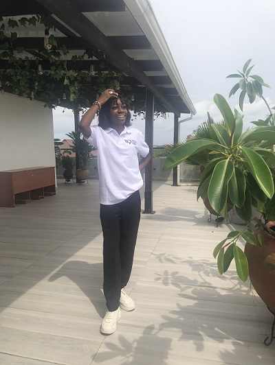

About Me
Hi there! I'm Peace Daniel, a passionate Frontend Development Intern at HNG and a lifelong learner on a mission to create beautiful, user-friendly websites. Since diving into the world of tech in 2020 with Zuri as a UI/UX designer, I've been exploring the endless possibilities of the web.
Connect with me on Slack:
Slack Display Name: PP
Slack Email: peacedaniel612@gmail.com
Current Time (UTC):
Current Day:
My Journey
I've always had a keen eye for detail and a knack for problem-solving. My love for design and technology led me to frontend development, where I blend creativity with logic to craft engaging digital experiences.
What I Do
Currently, I'm learning the ins and outs of frontend technologies and structures, with a particular focus on ReactJS. I'm also an active participant in the HNG Internship program, where I'm sharpening my skills and building exciting projects.
Fun Facts About Me
- Poetry Enthusiast: When I'm not coding, you can find me penning down verses or getting lost in a good poem.
- Anime Lover: Whether it's the latest series or a classic, anime is my go-to for relaxation and inspiration.
- Nature Buff: I love going for walks and soaking in the beauty of nature. There's nothing like a stroll through a serene park to clear the mind.
- Dog Pictures Collector: I have an ever-growing collection of adorable dog photos. They never fail to bring a smile to my face!
- Classical Music Aficionado: From Beethoven to Bach, classical music is my soundtrack for deep focus and creativity.
Sneak Peak At Me
My Aspirations and Goals
In the next two years, I aim to become proficient in frontend development, contribute to open-source projects, and continuously push the boundaries of what's possible on the web. I'm also passionate about AI and look forward to integrating it into my work.
- Become proficient in ReactJS and build several projects
- Contribute to open source projects regularly
- Learn and master backend development using Node.js
- Gain a deeper understanding of AI and machine learning
- Get certified in cloud technologies (AWS, Azure, or Google Cloud)
- Attend tech conferences and networking events
- Start a tech blog to share my learning journey
Useful Links
Check out these useful links and join me at HNG for an impact internship through the links below